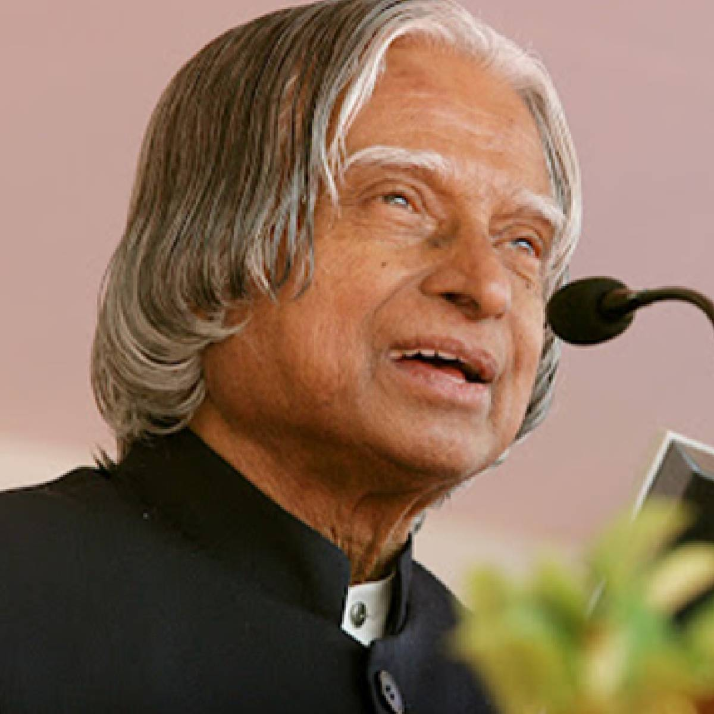

A Tribute to Dr. A.P.J. Abdul Kalam
Dr.Avul Pakir Jainulabdeen Abdul Kalam was an Indian aerospace scientist and statesman who served as the president of India from 2002 to 2007. Born and raised in a Muslim family in Rameswaram, Tamil Nadu, Kalam studied physics and aerospace engineering. He spent the next four decades as a scientist and science administrator, mainly at the Defence Research and Development Organisation (DRDO) and Indian Space Research Organisation (ISRO) and was intimately involved in India's civilian space programme and military missile development efforts. He was known as the "Missile Man of India" for his work on the development of ballistic missile and launch vehicle technology. He also played a pivotal organisational, technical, and political role in Pokhran-II nuclear tests in 1998, India's second such test after the first test in 1974. Kalam was elected as the president of India in 2002 with the support of both the ruling Bharatiya Janata Party and the then-opposition Indian National Congress. He was widely referred to as the "People's President".
Learn more about him on wikipedia